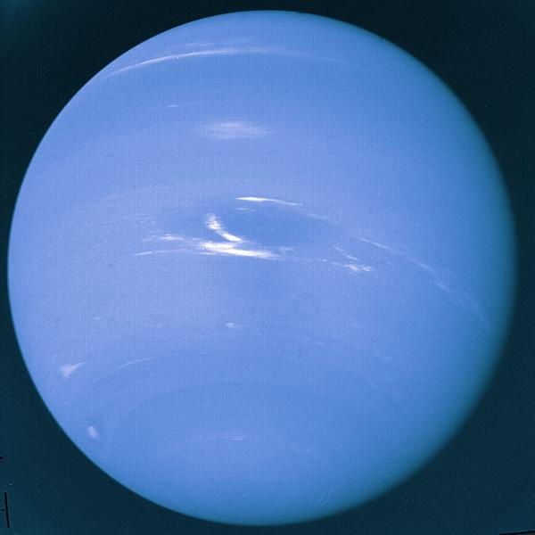

|
|
 NeptuneNeptune is a giant plant its interior is made up of methane ice, just as Uranus' is. Motions in the interior of Neptune help form the magnetosphere of Neptune. Heat generated within Neptune helps form the unusual winds of the atmosphere. Neptune's atmosphere shows a striped pattern of clouds. This cloud pattern is very similar to that of Jupiter and Saturn. Neptune even has a Great Dark Spot similar to Jupiter's Great Red Spot. The history of Neptune's atmosphere is similar to that of the other Giant planets. The composition of Neptune clouds is thought to be methane molecules. Motions in the cloud patterns give clues about Neptune's weather, which is similar to that of Jupiter and Saturn. The magnetosphere of Neptune is very alike of Uranus, medium sized but still much larger than the Earth's. Like that of Uranus, is probably made in the middle and with ice, rather than with iron at the core. Like Uranus, the magnetosphere of Neptune has an extreme tilt, almost 60 degrees. Because Neptune itself is not tilted however, the magnetosphere of Neptune has a more standard, but still completely uniquestructure. Neptune has 13 moons. It also has rings, but its rings are different from Saturn's. Neptune's largest moon is named Triton. Triton is much larger than any of the planet's other moons. Triton is a very cold place, so the moon is covered with ice. The geysers it has shoot ice 8 km (5 miles) high into Triton's thin atmosphere! There may be water under the ice at Triton. It is even possible that there might be life in that water. The interior of Triton is probably geologically active. |